Programación de Aplicaciones Telemáticas
Tema 10: Acceso a base de datos relacionales (JDBC)
Agenda
Sessión 1
- Introducción
- Estandares
- Spring Data
- Conceptos
- Repositorios
- Relaciones
- Transacciones
- Schema de base de datos
- Testing
Sessión 1
Introducción: JDBC
Java Database Connectivity
- Proporciona una API completa para poder conectarnos y trabajar con cualquier SGBD relacional
- Utiliza un driver específico para cada SGBD, este sí es diferente para cada motor. PostgreSQL, MariaDB, MySQL, DB2…
Utilidad de JDBC
- Abrir y cerrar conexiones contra la BD.
- Operaciones de gestión (crear y borrar tablas…)
- Operaciones CRUD (insertar, actualizar, borrar y leer)
- Transacciones
Ejemplo JDBC legacy PostgreSQL

Estándares: ORM
Object-Relational mapping es una técnica de programación para convertir datos entre el sistema de tipos utilizado en un lenguaje de programación orientado a objetos y la utilización de una base de datos relacional como motor de persistencia
En la práctica esto crea una base de datos orientada a objetos virtual, sobre la base de datos relacional
Ejemplos: Hibernate, JPA, JDO, iBatis…
Estándares: DDD (Domain-Driven Design)
- Diseño de la aplicación en base al dominio
- El dominio es la parte de la realidad que expresamos mediante programación orientada a objetos
- Su representación en objetos se identifica como el Modelo de la aplicación
DDD: Core principles
- Focus on the core domain and domain logic
- Base complex designs on models of the domain
- Constantly collaborate with domain experts, in order to improve the application model and resolve any emerging domain-related issues
DDD: Core principles
- Entity: Son objetos que tienen identidad propia en el sistema y donde sus atributos o propiedades no identifican quién es. Por ejemplo, un User identificado por un user_id único
- Value Object:no tienen identidad ninguna, solo nos interesan sus atributos, ya que complementan la descripción del dominio, pero no se identifican por sí mismos
DDD: Core principles
- Aggregate:grupos de entidades que se relacionan entre sí donde se define la dependencia entre ellas. En dichos agregados hay que definir cuál es la Entidad padre (root) y cuál es la frontera
- Reference:Se utilizan en los agregados. En vez de referenciar la entidad completa, se referencia el id de la entidad
DDD: Core principles
-
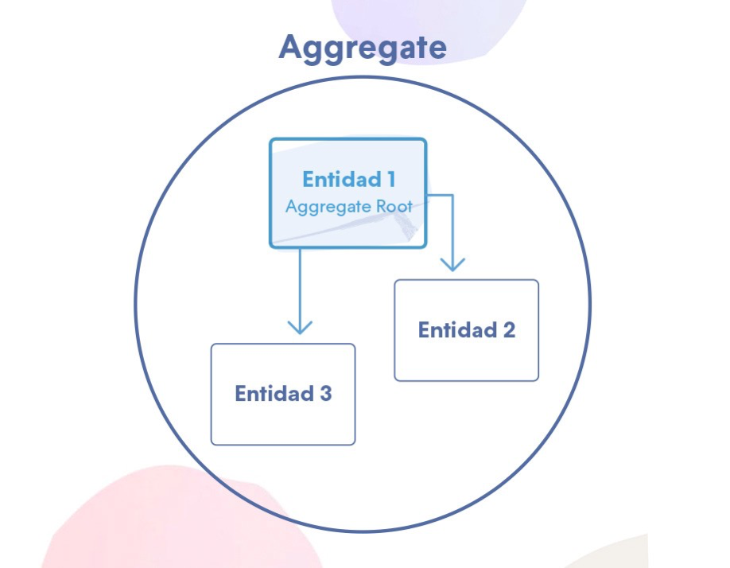
DDD: Core principles
- Service:servicios de dominio. todos aquellos comportamientos que debemos tener en nuestra aplicación y que no pertenezcan a ninguna entidad. No tienen estado, y modifican una o varias entidades de dominio, pero que no son propias de la entidad (cargar dinero en la cuenta de un Usuario)
- Repository:clases que se encargan de persistir y recuperar los objetos de dominio que necesitamos que pervivan en el tiempo. Normalmente, se crea un repositorio por Entidad raíz de una Agregación
Spring Data
- Spring Data’s mission is to provide a familiar and consistent, Spring-based programming model for data access while still retaining the special traits of the underlying data store
- It makes it easy to use data access technologies, relational and non-relational databases, map-reduce frameworks, and cloud-based data services. This is an umbrella project which contains many subprojects that are specific to a given database. The projects are developed by working together with many of the companies and developers that are behind these exciting technologies
Spring Data: technologies
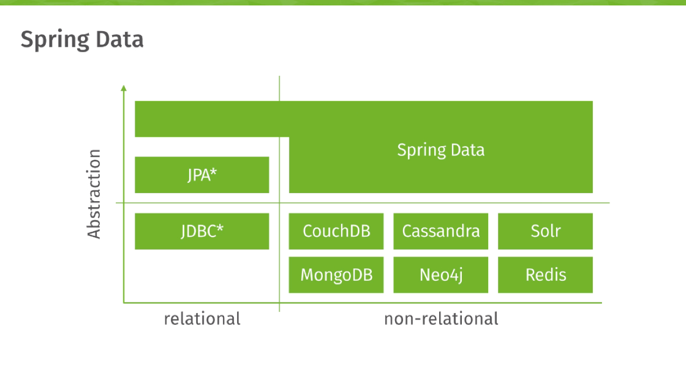Spring Data JDBC
- ORM simple y limitado
- Permite implementar repositorios basados en JDBC
- Inspirado en DDD
- Integración con Spring
Spring Data JDBC
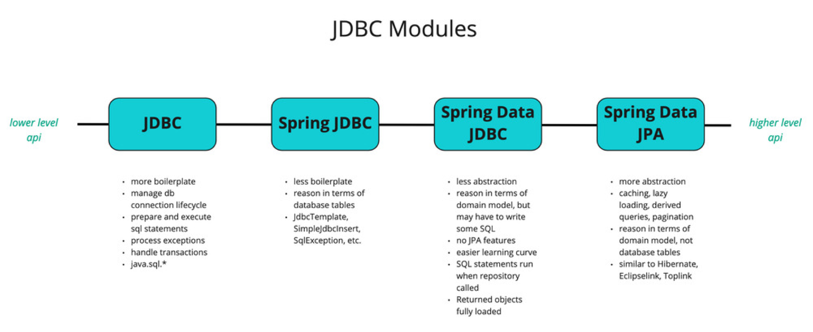Spring Data JDBC: maven dependencies
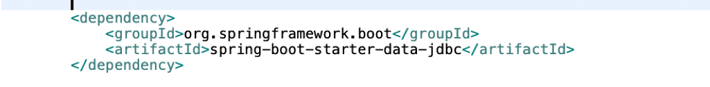Spring Data JDBC: DataSource
- Lo primero que se debe configurar para poder hacer uso se Spring Data JDBC es un objeto DataSource
- Este objeto representa la conexión con la fuente de datos (DB)
- Se debe configurar la URL, el driver de la JDBC, usuario y contraseña
- Se puede configurar mediante application.properties o programaticamente
Spring Data JDBC: DataSource
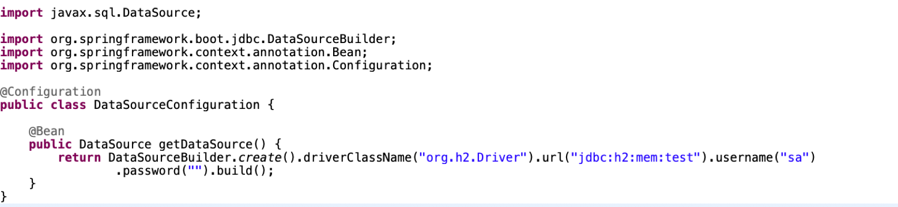 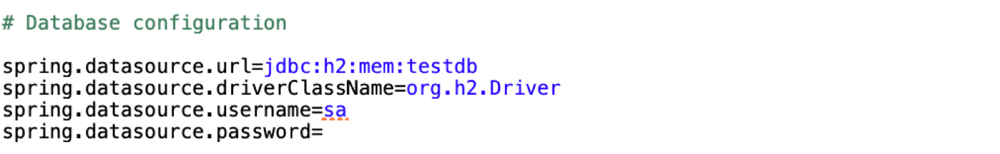Spring Data JDBC: Templates
- Gracias a la AutoConfiguration de Spring Boot, al usar Spring Data JDBC, se autoconfiguran dos Beans en base al DataSource definido que podemos usar para realizar operaciones contra la base de datos: JdbcTemplate y NamedParameterJdbcTemplate
Spring Data JDBC: Templates
- Su uso es similar al que usamos con JDBC puro
Spring Data JDBC: Templates
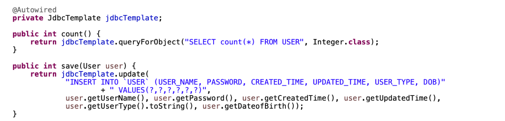Conceptos: Entity
- Clases del modelo que tienen que tener un @Id en la BD
- Cada Entity tiene asociada una tabla de base de datos 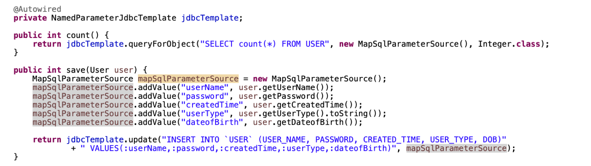 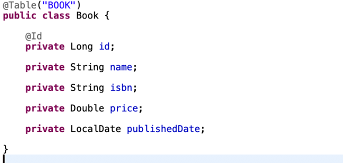
Conceptos: Value Object (DTO)
- Uso de @Embedded. No se crea una tabla aparte 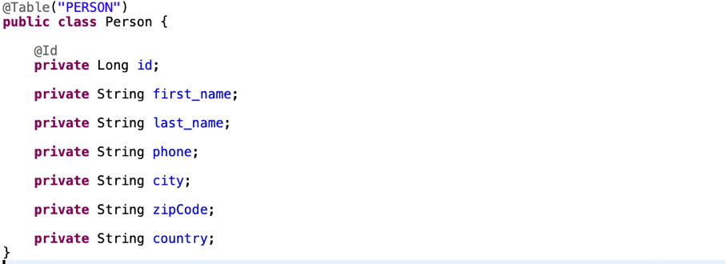 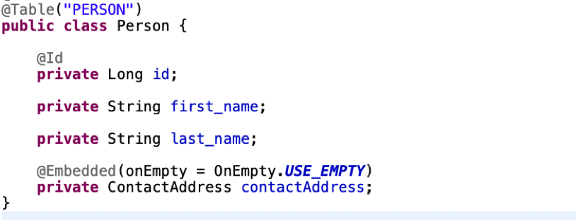
Conceptos: Aggregates
- Entidades que agrupan otras entidades de la base de datos
- La entidad padre o Aggregate Root, es la única entidad que puede ser cargada desde un repository (esquema DDD), y también es la encargada de manejar las entidades hijas
Conceptos: Aggregates
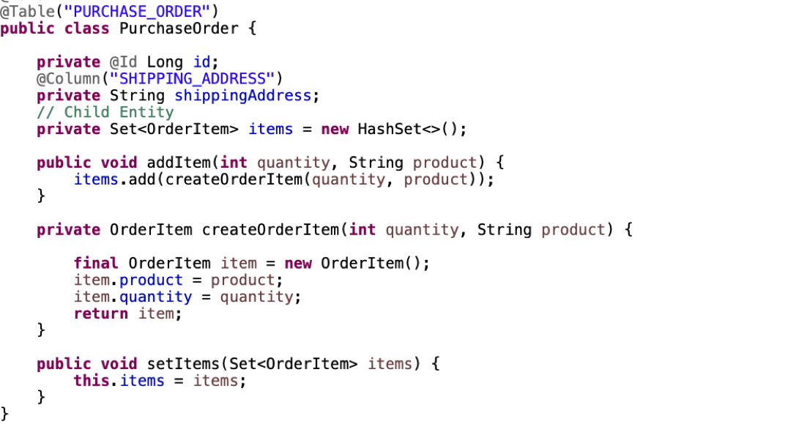 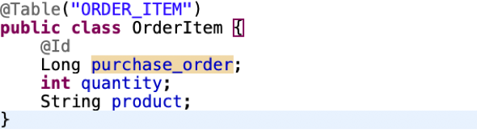Conceptos: References
- Son entidades “intermedias” en una relación entre entidades
- Se utilizan para relacionar entidades de base de datos que están al mismo nivel, es decir, no existe entidad padre ni entidad hija
- Hacen referencia a otra entidad a través de un identificador
Conceptos: References
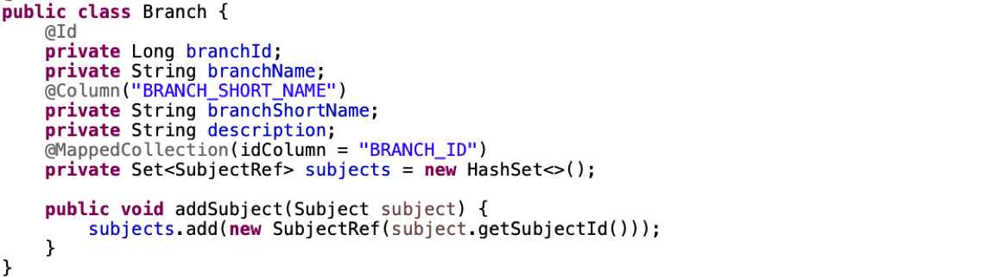 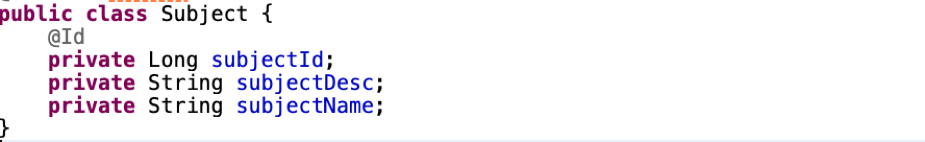 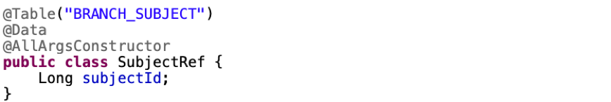Repositorios
- Interfaz de acceso a base de datos. Desde estos beans se realizan todas las operaciones del CRUD
- Son interfaces que extienden de CrudRepository
- CrudRepository trae ya todos los métodos básicos CRUD: findAll(), delete(), findById(), save()…
- Se puede crear más métodos con el uso de la anotación @Query
- Siguiendo el paradigma DDD, un repositorio por Agreggate Root
Repositorios
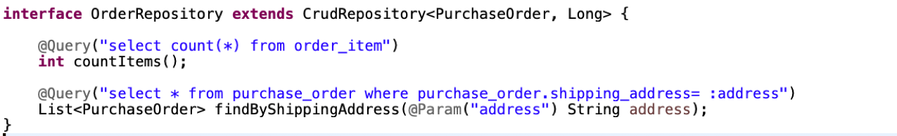Relaciones
- One to One: 1-1
- One to Many: 1-n
- Many to Many: m-n
One To One
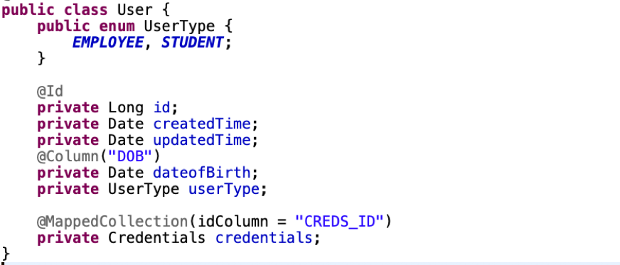 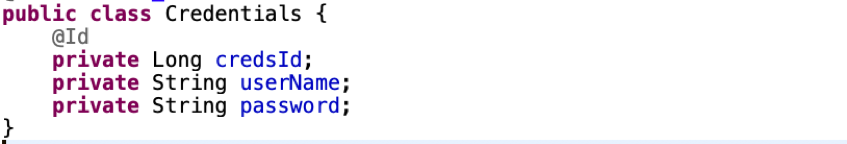One To Many
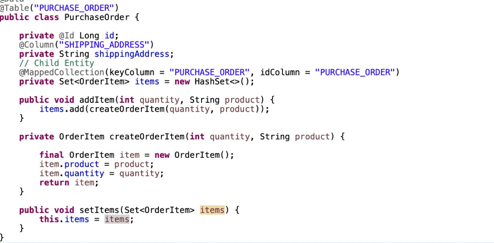 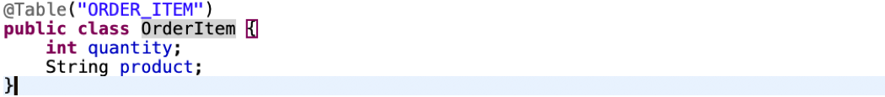Many To Many
Transacciones
- Cuando se realizan operaciones de escritura es necesario manejar transacciones para evitar inconsistencias en la base de dato
- En Spring podemos hacer uso de la anotación @Transactional a nivel de método, en repositorios y servicios
- Si se produce alguna excepción dentro de dicho método, Spring hará un rollback de dicha transacción, dejando la BD en el estado original
- Las operaciones de escritura por defecto de los repositorios que extienden de CrudRepository son por defecto, transaccionales
Transacciones: @Transactional
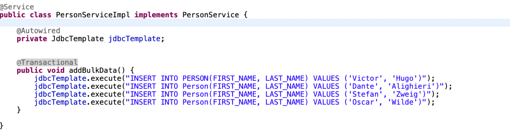Transacciones: @Modifying
- Las queries que sean del tipo UPDATE y DELETE, además de ser transaccionales deberán llevar la anotación @Modifying para poder ser ejecutadas
Schema de base de datos
- Cuando levantamos nuestra aplicación, ésta necesita que la base de datos esté activa y que exista el schema
- Para esta tarea, Spring nos proporciona unas properties donde podemos indicarle rutas a scripts SQL que ejecutará al levantar la aplicación
Schema de base de datos
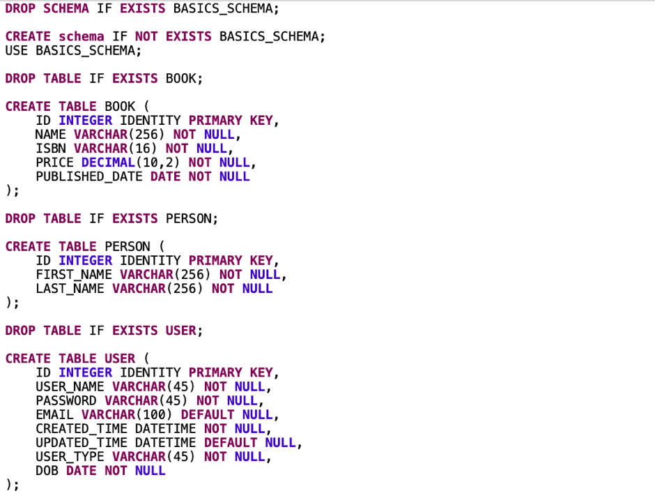Schema de base de datos
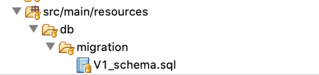 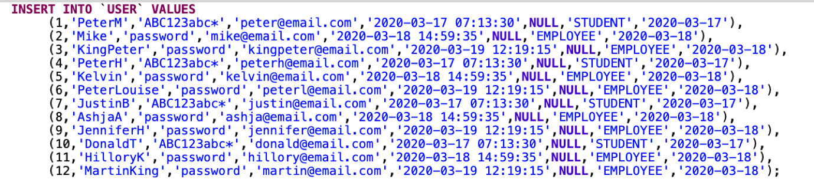Testing: Datos de inicialización
- En el caso del testing, podemos cargar los datos en la base de datos bien por código o bien mediante un script SQL
- De manera similar al script del Schema, podemos dejarlo en src/main/resources , y hacer uso de una anotación que nos proporciona Spring para cargarlo en la ejecución del test
Testing: Datos de inicialización


Testing: Datos de inicialización
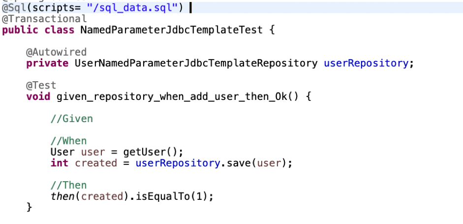Test Containers
- Utilizados en el contexto de Testing
- Nos permiten crear de manera sencilla contenedores a modo de sandbox para ejecutar los tests
- Reemplazan a los servicios reales con los que trabajaría nuestra aplicación
- P.e. Una base de datos
Test Containers: PostgreSQL
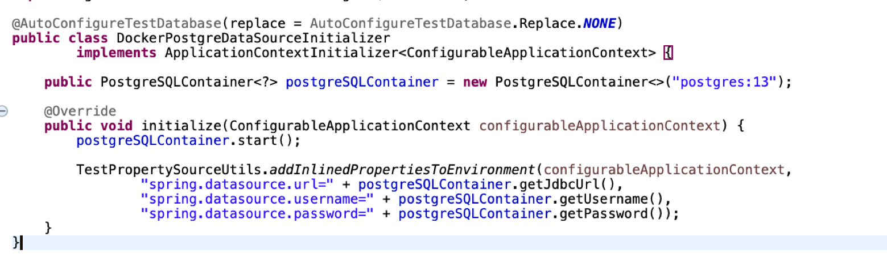Test Containers: PostgreSQL
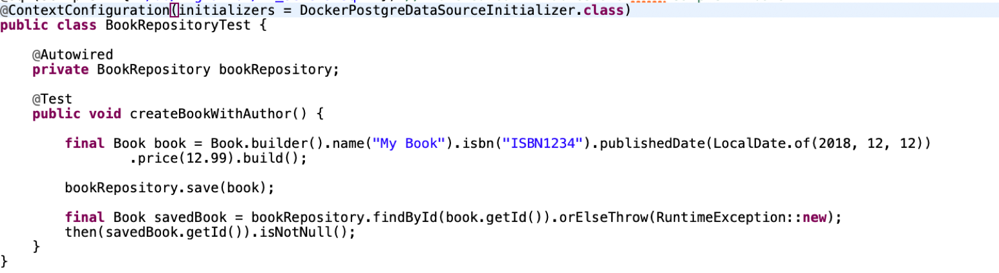Test Containers: PostgreSQL
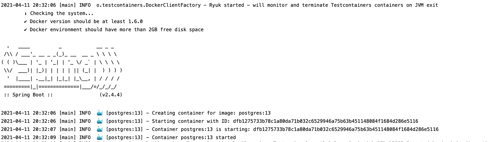Referencias
- https://spring.io/projects/spring-data
- https://spring.io/projects/spring-data-jdbc
- https://docs.spring.io/spring-boot/docs/current/reference/html/appendix-application-properties.html#spring.datasource.url
- https://javabydeveloper.com/
- https://medium.com/ingenier%C3%ADa-en-tiendanube/domain-driven-design-y-el-modelo-de-actores-deae7675a921
- https://airbrake.io/blog/software-design/domain-driven-design
- https://www.paradigmadigital.com/dev/ddd-dominio-implica-crecer-fuerte/
- https://docs.spring.io/spring-data/jdbc/docs/current/reference/html/
- https://www.testcontainers.org/modules/databases/postgres/